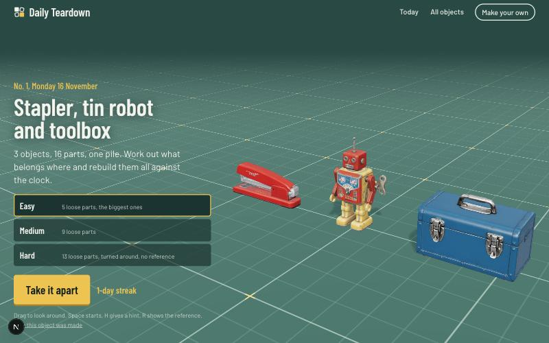
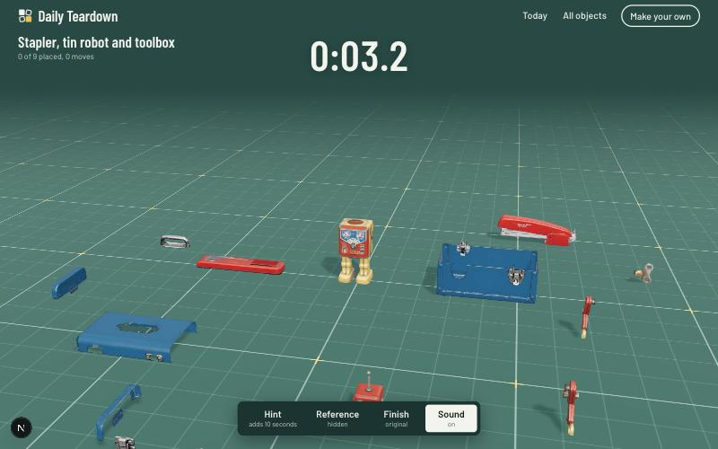
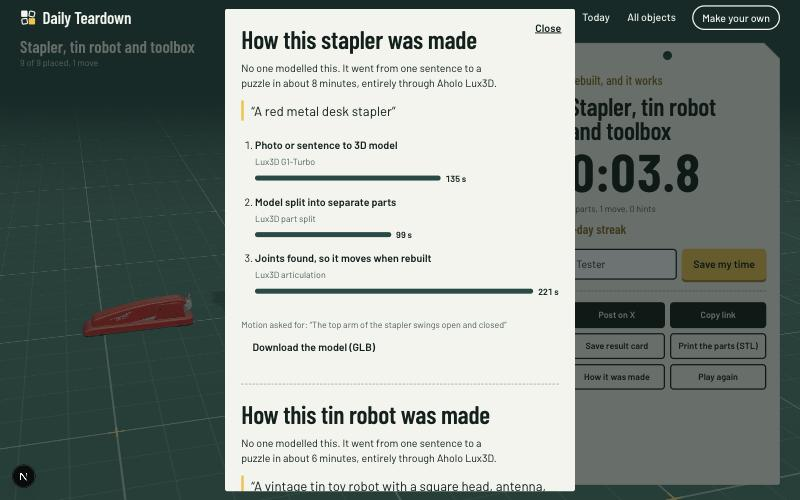
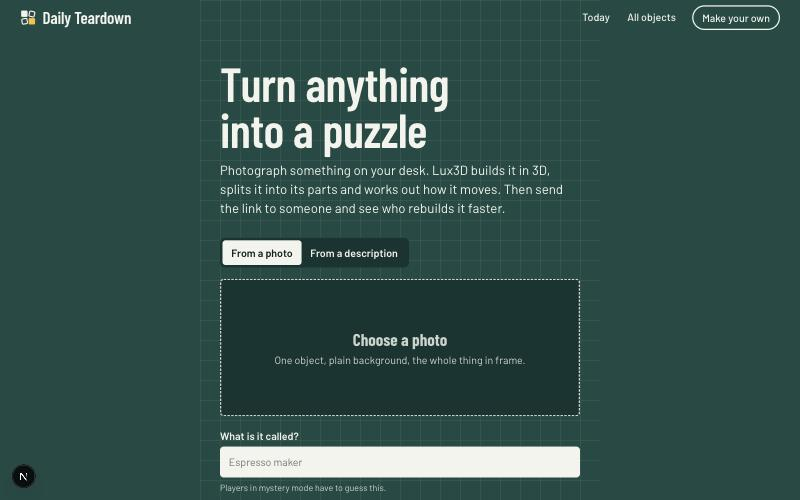
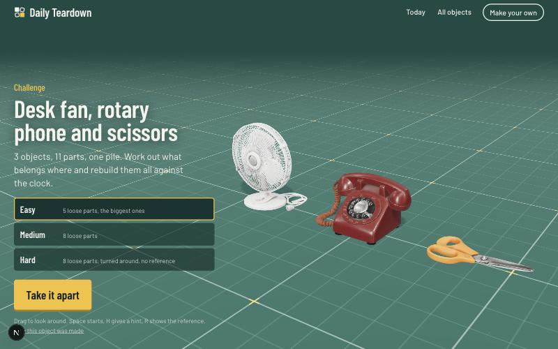
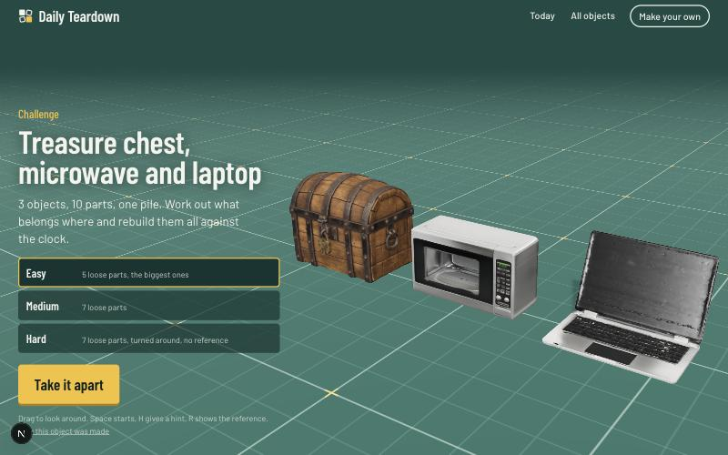
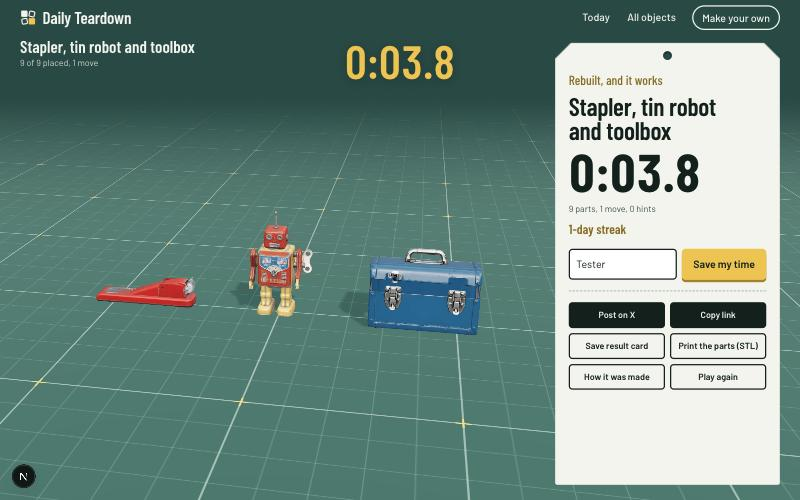

Manycore Aholo Global 3D AI Hackathon — project report
A daily 3D puzzle. Real objects are taken apart; you rebuild them against the clock, and they come alive when you finish.
Every object, every puzzle piece and every moving joint is made by Aholo Lux3D.

Lux3D can do something most 3D generators cannot: it does not stop at a shape. It can cut a model into its real parts, and it can work out which parts are joined and how they move.
We asked what those two abilities are for if you are not a 3D artist. Our answer is a toy everybody already understands: take a thing apart, then put it back together.
So the part split became the puzzle pieces, and the joints became the reward. When the last part clicks in, the stapler arm swings, the toolbox lid opens and the robot waves.
Everyone gets the same objects each day, like a daily word game, with a timer, a streak, a leaderboard and a link to race a friend.

Lux3D is not a feature of this project. It is the whole content pipeline. Nothing in the daily puzzle was modelled, cut or rigged by a person.
The times on the right are the range across the ten objects on the live site, measured by the app itself and shown to players under “How it was made”.
Part split and articulation run at the same time, so a new object is playable about five to eight minutes after someone types a sentence.


| What we found | Why it mattered | What we did |
|---|---|---|
| Part split gives 2 to 9 parts per object, usually 2 to 5. | A two-piece puzzle is over in seconds. | Benches: three objects side by side, all their parts in one pile. Today’s has 16 parts. |
| Articulation returns a URDF with one mesh per link, not an animated model. | There was no animation to press play on. | The game reads the joints and drives them itself, so every object moves the way Lux3D says it should. |
| Small parts such as screws and latches are too fiddly to place. | Players got stuck hunting for specks. | The biggest part of each object stays put; tiny parts ride along with the nearest large one. |
| Raw models are 11–19 MB, with up to 267,000 triangles. | The first live version took 35 seconds to load on a slow connection. | Textures to 1K WebP, meshes simplified to 60,000 triangles and compressed. 13.3 MB became 2.8 MB; load time fell to about 5 seconds. |
| One account builds one object at a time. | A public “make your own” could jam or drain credits. | A server queue with a visible place in line, 2 builds per visitor and 12 per day. |


Stapler, tin robot, toolbox, desk fan, rotary phone, scissors, treasure chest, microwave, laptop and office chair. Each was made from a single sentence. The daily bench is chosen from the date, so every player in the world gets the same three.
The demo is a live website, not a recording. Open the link and today’s puzzle loads in a few seconds.
Built with Next.js, three.js and the official Aholo SDKs. Generated files are copied to the server because Lux3D result links expire after two hours.
What is honest to say it is not yet: scores are stored on one small server, there are no accounts, and the nickname on the leaderboard is whatever the player types.

Thirty seconds is enough: press Take it apart, drag five parts home, and watch the objects move.